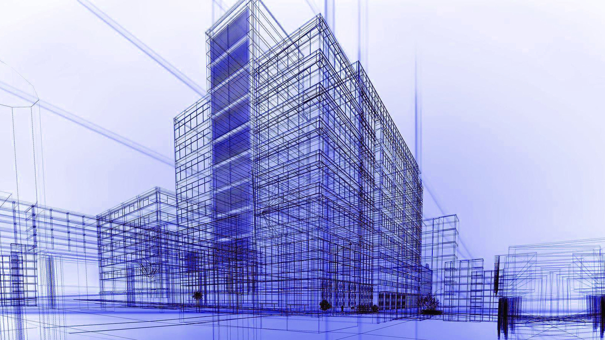

Mühendislikte Üretim Standartları Değişiyor
Geleneksel talaşlı imalat yöntemleri yerini yavaş yavaş eklemeli imalata bırakıyor. Makine mühendisliği alanında prototipleme süreçlerini inanılmaz hızlandıran bu teknolojiler, akademik raporlamalardan endüstriyel seri üretime kadar geniş bir yelpazede kullanılıyor.
FDM (Fused Deposition Modeling)
Erimiş filament yığma teknolojisi olan FDM, özellikle RepRap projesiyle birlikte açık kaynak dünyasında büyük bir ivme kazandı. Termoplastik malzemelerin katman katman eritilerek üst üste dizilmesi mantığına dayanan bu sistem, düşük maliyetli hızlı prototipleme için hala sektörün vazgeçilmezi konumunda.
SLA (Stereolithography)
Eğer çok daha yüksek hassasiyet ve pürüzsüz yüzeyler gerekiyorsa, sıvı fotopolimer reçinenin UV lazerle kürlenmesi prensibine dayanan SLA teknolojisi devreye giriyor. Özellikle karmaşık geometrilere sahip parçaların milimetrik üretiminde, FDM'in ulaşamadığı detay seviyelerini SLA ile yakalamak mümkün.
Yorumlar (1)
Ümit Özkan
3 Mart 2026, 14:30FDM ve SLA arasındaki farklar çok güzel özetlenmiş, mühendislik öğrencileri için faydalı bir yazı. Teşekkürler.
Yorum Yap